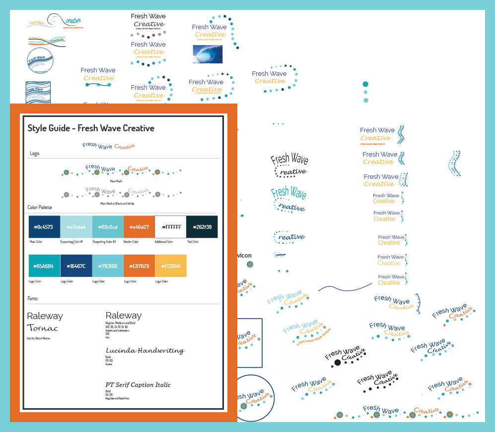
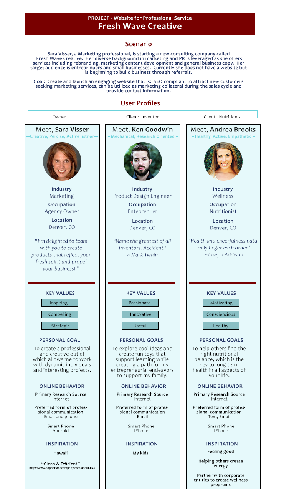
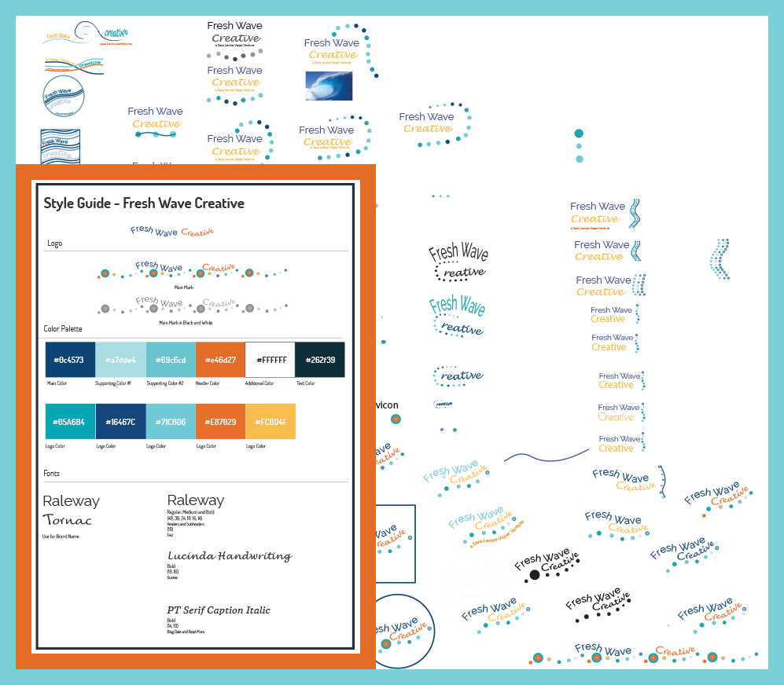
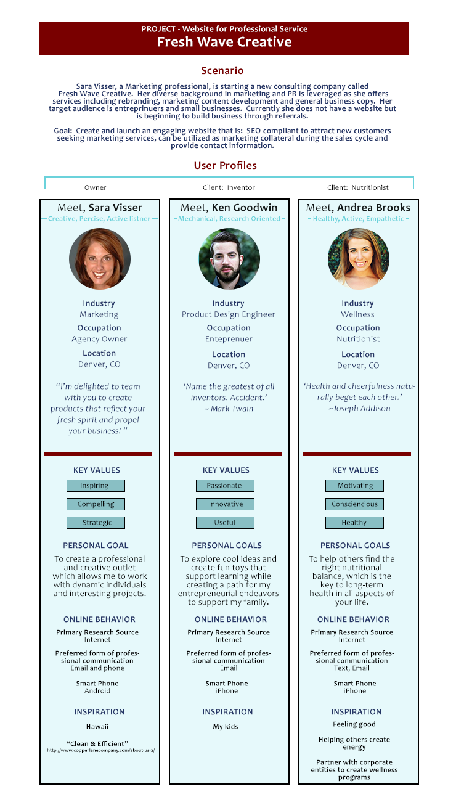

PROJECT APPROACH
Fresh Wave Creative is a small business in the early stages of building business beyond word of mouth referrals. As the project scope was defined it became clear that designing the website would begin with a branding and identity definition project.
As with any project, I start by learning about the subject matter. So, a quick but thorough brush up on marketing was in order.
Then I began looking to other sites for inspiration...boutique marketing and PR firms, design studios and creative agencies. These creative businesses have visually creative and stimulating sites, go figure. So, I took note of the most interesting visual aspects as well as the positioning of service offerings.
I began formulating some questions to guide the development of Fresh Wave Creative:
How to articulate the service offering? What qualities to highlight? How detailed should service description be? What is tag line/highlighted offering? How to make it personal? Showcase skill and proficiency? How to create visual interest? What project to feature? Is there a newsletter? Blog? What will be the call to action?


IDEATION
We paired the research with Sara's unique qualifications and personal style to determine what should be highlighted. We created a 'laundry list' of buzz words that described the work and benefits clients could expect, refined that list and started ideation of turning those words into visual design.
The color palette in blue is calm, playful, creative and simple. It considers the the company name, Fresh Wave Creative. Actually, the company name and logo design were developed together. We iterated a lot until finally landing on the concept of Fresh Waves Creative.
Next step, really dive into defining User Personas to solidify the messaging that was beginning to take shape.
 



VISUAL DESIGN and DEVELOPMENT
The low-fidelity wireframe was a quick and easy to start communicating form and function. We decided to keep the webpage on a single page instead of using page navigation. Because this style kept it pretty simple I quickly moved from a low-fidelity to a hi-fidelity wireframe. The hi-fidelity wireframe required less imagination from Sara to understand what the final product was going to look like. We were able to quickly move through a few iterations of visual design that played with font size, spacing, layout and backgrounds before finalizing.
I love the process of turning concepts into visual design!
Coding, oh my! Translating the design into a mobile responsive site was a fun challenge. This was the first time I sat in front of my computer with a blank text editor, Sublime. Lots of lessons learned!!!


PROJECT RESULTS
Fresh Wave Creative design and development was an exercise to articulate the value proposition of the business, create UI that resulted in a great user experience, incorporate design that reflected Sara's personality and code a mobile responsive site. Look for Fresh Waves Creative to be published soon.